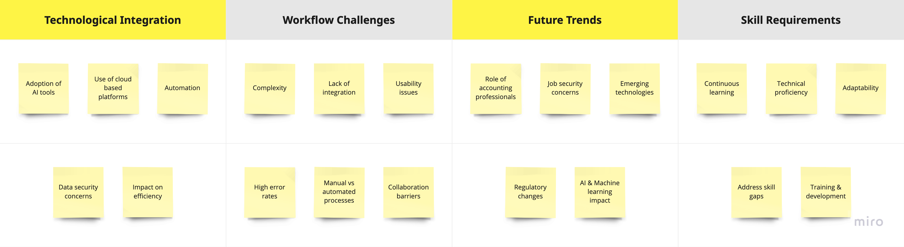
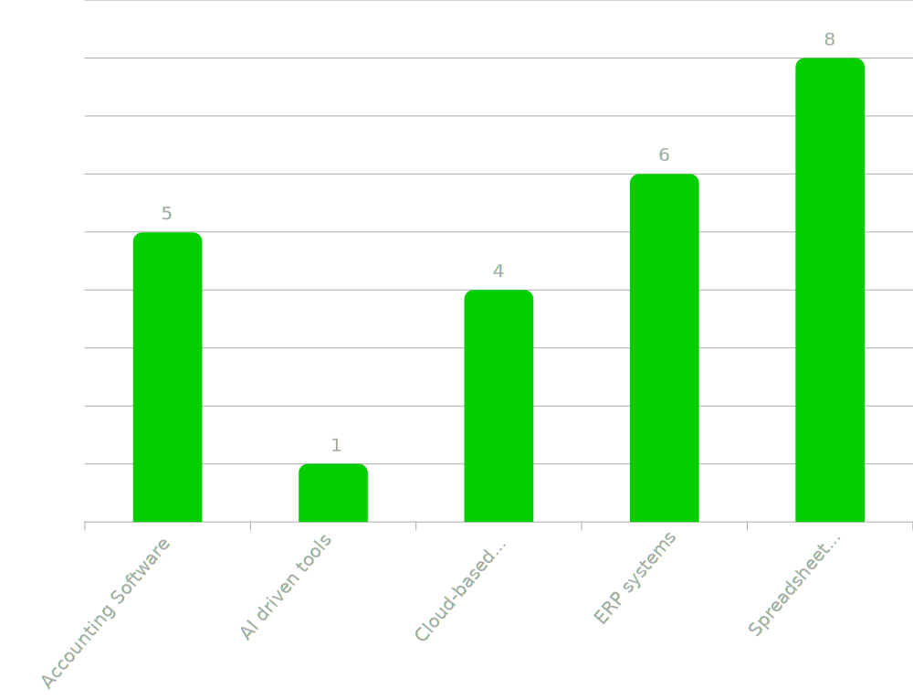
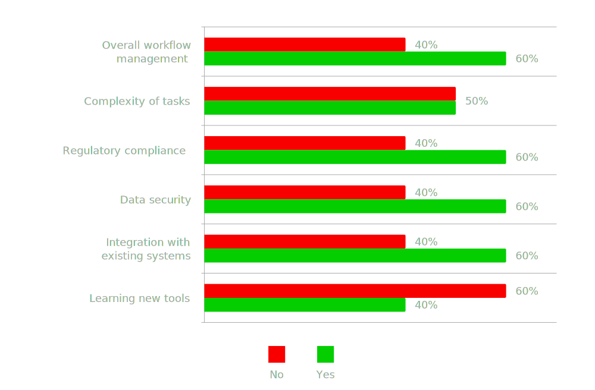
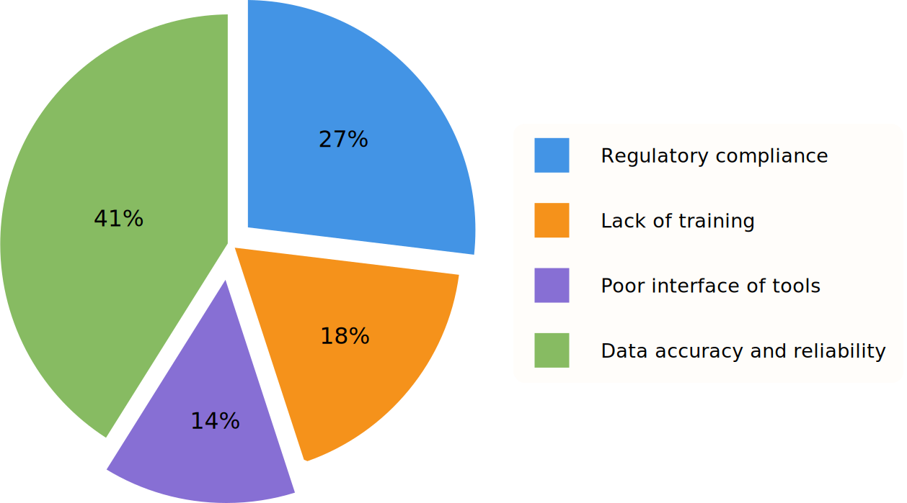
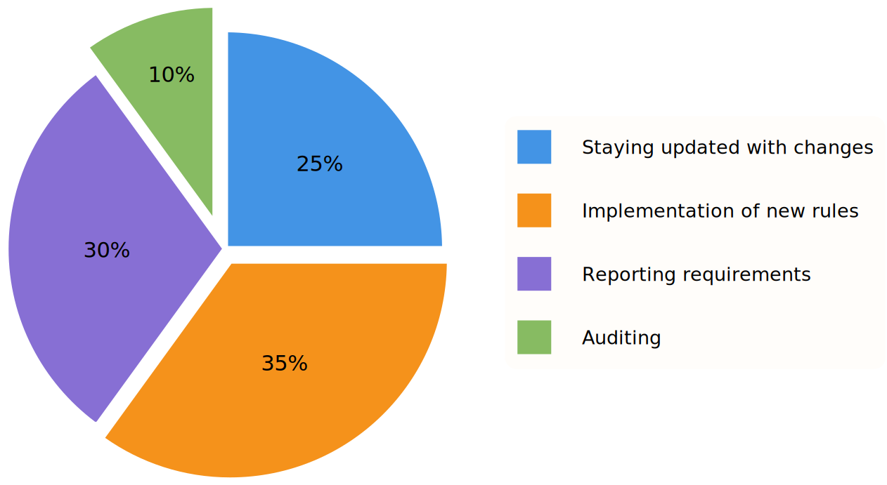
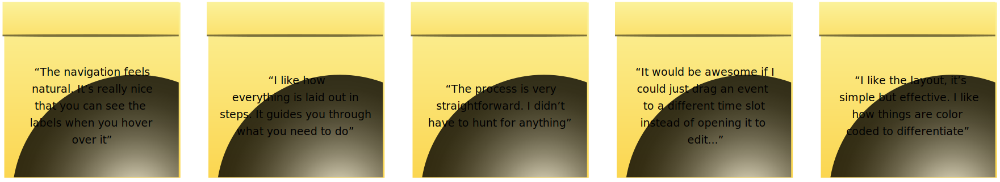

Timeline: 3 months
Role: Product Strategy & UX/UI Design
Overview
Objective
Background
▸ How are accounting workflows evolving due to AI and digital tools?
▸ What challenges do professionals face in integrating these technologies?
▸ How can the user experience be enhanced to support smoother workflows and improve task management?
Competitive Analysis
Each of these platforms provides workflow automation, cloud-based access, and integration with financial tools, however, they also come with challenges, as depicted in the table below.
| Feature | Quickbooks | Xero | FreshBooks | Sage Business Cloud | Oracle NetSuite |
|---|---|---|---|---|---|
| Cloud-Based Access | ✅ Yes | ✅ Yes | ✅ Yes | ✅ Yes | ✅ Yes |
| AI-Powered Automation | ⚠️ Limited AI | ⚠️ Basic AI | ⚠️ Basic AI | ⚠️ Basic AI | ✅ Advanced AI |
| User-Friendly Interface | ⚠️ Overloaded | ⚠️ Complex | ✅ Easy UI | ⚠️ Overloaded | ❌ Complex |
| Customisable Workflows | ⚠️ Limited | ✅ Yes | ⚠️ Limited | ✅ Yes | ✅ Yes |
| Integration with Legacy Systems | ⚠️ Difficult | ⚠️ Requires Plugins | ⚠️ Limited | ✅ Yes | ✅ Seamless |
| Task and Project Management | ✅ Yes | ✅ Yes | ✅ Yes | ✅ Yes | ✅ Yes |
| Regulatory Compliance Updates | ⚠️ Manual | ⚠️ Manual | ⚠️ Manual | ✅ Yes | ✅ Yes |
| Security and Data Privacy | ✅ High | ✅ High | ✅ High | ✅ High | ✅ Enterperise-Level |
| Learning Curve | ❌ Steep | ❌ Steep | ✅ Easy | ❌ Steep | ❌ Very Steep |
Methodology

Findings and Insights
| Theme | Sub-Themes | Evidence |
|---|---|---|
| Technological Adoption | Cloud platforms, ERP systems | "Implementation of cloud based financial tools for client management" |
| Challenges in Technological Adoption | Learning curve, integration issues | "It takes time to get a hang of new software" "Integration with client systems is challenging" |
| Regulatory Compliance | Data accuracy, compliance updates | "Regulatory compliance is the most challenging aspect of my work" "Ensuring data accuracy is critical" |
| AI & Automation | Predictive analytics, training | "AI-driven tools will significantly impact the accounting profession in the next five years" |
| Customisation & Integration | User customisation, tool integration | "Integration with existing accounting tools is crucial" "Automated reminders and notifications are essential" |




Understanding the Target Audience
.svg)
.svg)
Journey Map
.svg)
Prototype Development

User Testing and Feedback

Challenges and Learnings
My biggest takeaways from this project is to keep it simple, and design AI to support–not replace–professionals.